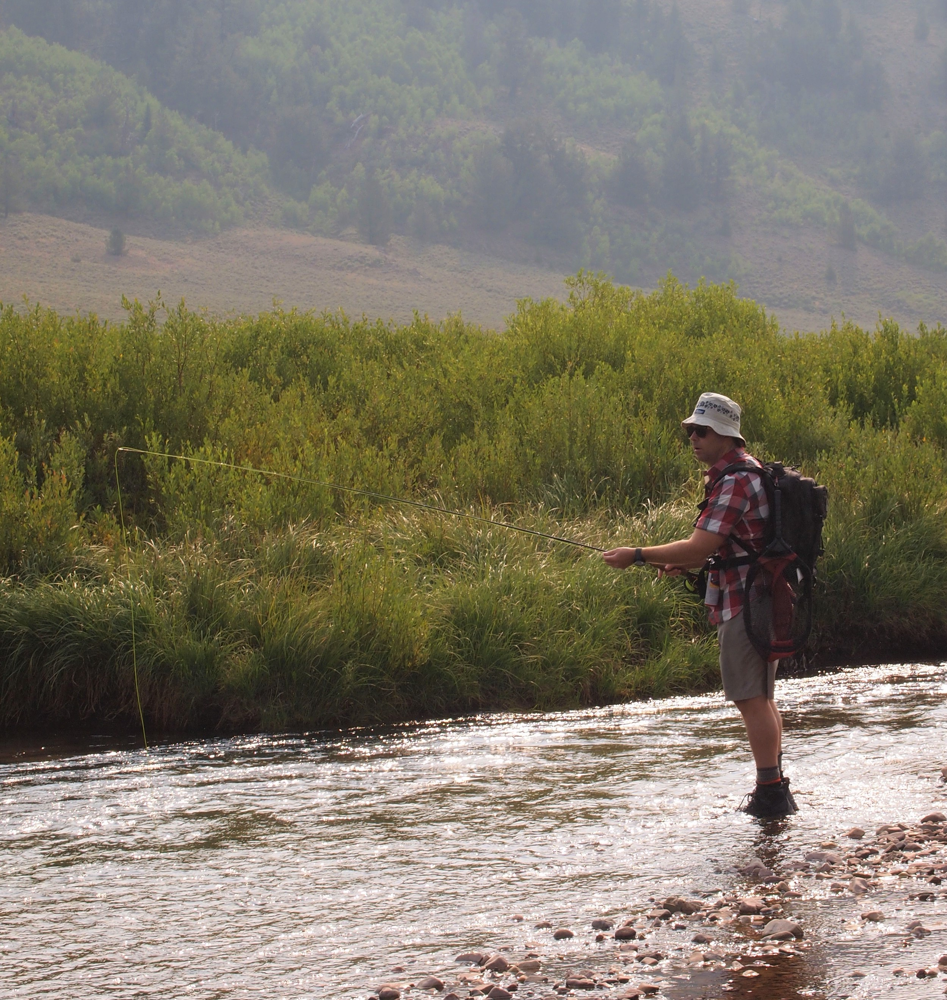

How I Fish
Every angler has their own style, techniques, and preferred ways of doing things. Mine is simply the result of how I learned to fly fish, and adjustments that I’ve made over the years. None of my advice or descriptions are meant to be prescriptive as I’m a big believer in learning to fish your own fish (borrowed from the expression, “hike your own hike”), but I think understanding some basic, fundamental strategies are helpful, especially for new anglers.
Fish Upstream
I fish upstream about 99% of the time. That is, I begin downstream of wherever I think my endpoint will be, and work upstream. If I’m finishing along a road and park in a turnout, I usually fish upstream from my car, then walk back downstream on the road when I’m finished. I do this because I believe most anglers walk downstream from their car, then fish upstream back to their car. If people consistently park in the same turnout, the stretch of water downstream of the car will see more pressure than that upstream, and I always want to fish water with less fishing pressure.
I fish upstream for a few reasons. First, as the name suggests, I fish with dry flies if at all possible, though this is changing a little bit (see below). I think the “float” or presentation of the dry fly is more natural when you cast upstream and let it float back to you, rather than casting downstream and have it float away from you. Maybe this is only because of my own poor technique fishing downstream, but I feel like trying to feed line as a fly floats downstream just looks less natural.
Second, fish almost always face upstream into the current. When you approach downstream, the fish are looking away from you and are less likely to spook. This is probably not as big of an issue on larger rivers, but most of my fishing is done on small rivers and creeks where the fish can easily see you if you get too close to their field of vision. A valid counterpoint to this is that if you cast upstream, the fish see the line, leader, and tippet go over their field of vision before they see the fly. If you cast downstream (and the fish face upstream), they see the fly first. This must be true, but I don’t think the fish care much about seeing line in the water, and I think they care a lot about seeing a person moving around. It’s also the case that often when wading you stir up dirt and debris and this can cause off-color water to move downstream. If you’re fishing upstream this is irrelevant because the fish will never know.
Finally, if a fish takes the fly and you’re downstream of the fish, when you set the fly you are setting it back into the fish’s mouth which produces a better hook set and makes it more likely you land the fish. If you’re fishing downstream, setting the hook pulls the fly away from the fish’s mouth and toward the angler, increasing the chances you’ll simply pull the fly out of the fish’s mouth.
The only exception to my fishing upstream rule is when I use a streamer. My streamer technique is standard and basic: I cast across and down, or just down if the water is narrow, and pull the line back toward me by hand (without reeling in). I almost never fish this way however, because I stink at this technique. I’m sure I’ve caught fewer than five trout on a streamer.
Cast Short
The vast majority of my fishing is done on small and medium size waters. The Logan is the biggest river I normally fish and it has a summer streamflow of around 100 cfs. Compare that a famous western river like the Madison which has a flow over 1,000 cfs above Bozeman. Because of the sizes of my regular waters, I make very short casts, usually shorter than 20 feet, and often closer to ten feet. This is contrary to the idealized image of fly fishing, which is at least partially due to the dramatic fishing shots in A River Runs Through It.
Casting in the movies.  Casting in real life.
The longer your line, the more likely it is you’re going to get something tangled, pile your line on your fly, or just be inaccurate with your cast. To me, there is a direct trade-off between casting accuracy and how much line you’re trying to cast. If you shorten your line, you’re much more likely to put the fly where you want it. And, that’s really the most important thing. I find that if I cast to a spot and make a bad cast, either by presenting the fly poorly, or putting it in the wrong area, I can probably try again and still bring the fish up. But if I do that more than two or three times, the fish will spook and I’ll have lost my chance. The thing that separates really good anglers from average anglers (I am decidedly in the average camp), is that they can make an accurate cast with good presentation to a spot the first time. It might take me two or three or four casts to get the same result, and with each successive catch, the greater the chance the fish will vanish. But even the best casters get less accurate with distance. A friend of mine related a story in which he was trying to make a complicated cast across the water when another friend said, “Are you trying to fish that hole over there? If so, just walk over there and cast into it.” That’s good advice.
Keep Moving
When I fished as a kid, and even when I started to learn to fly fish, I would stand in the same spot and cast repeatedly to the same area, sometimes for hours. Looking back, I can’t believe I did this. If a fish didn’t come up for the first fifty casts, why would it come up in the next fifty? As I’ve become better at spotting fish underwater, I also realize that trout will spook after a few casts over their hole. They’ll either move somewhere else, or go to the bottom of their hole and stay there. I’m now a believer in the idea that a hole gets five casts or so, maybe a few more if you’ve got good reason to believe there is a fish in the hole and you haven’t yet spooked it. After that, I move on.
The person who taught me to fly fish has an even stricter rule–he makes two or maybe three casts then moves on. I tend to give a spot a little bit more time than that, but not much more. Sometimes if I feel like I haven’t quite hit the spot I’m looking for, and haven’t totally blown the hole by splashing my fly or line all over it, I’ll keep casting into it. But, even five or six casts takes me no more than a minute. After that, I’ll cast to a different spot.
By moving, I mean that I wade the river, cast to likely spots a few times, then walk upriver to the next spot. On a river like the Logan, which is full of rocks and holes, I can move only one or two steps laterally or forward to the next spot. On other types of rives that have well-defined holes and riffles, there might be more walking between spots. Either way, I typically cover a lot of water. One of the reasons I get so annoyed with crowded rivers is that it prevents me from moving as much. If I walk upstream and run into another angler, I get out and walk way upriver to get clear of that angler as I don’t want to high-hole them.
Change Flies, But Not Too Much
I believe fly selection is largely overrated, and I think it’s an easy way to signal expertise and purposefully confuse new anglers. Yes, I understand that in some situations there might be a hatch that the fish are keying in on, and if you’re on a super famous river with a ton of pressure it might be really important to match the hatch. But, this is not the average experience. In mid-summer fly fishing on almost any western river, I feel like I basically need a caddis and a parachute adams, maybe in two or three different colors.
If your dry fly isn’t working at all, it might be time to switch flies. If this occurs, I always go smaller as I feel like fish will refuse to bite on flies that are too big, but not too small. It’s rare that you need a bigger fly if your existing fly isn’t working. I also switch colors sometimes, basically dividing flies into drab or bright. If drab isn’t working try bright, and vice versa. A lot of people make claims that say on low light days use drab flies (or maybe it’s other way around) but I’ve never noticed any patterns. A lot of this folk wisdom seems to work great except when it doesn’t. Don’t be inimated by fly selection, 90% of my fishing is done with no more than four or five flies. It isn’t a science, and we shouldn’t pretend like it is. Go with what feels right, if it doesn’t work, switch to something different.